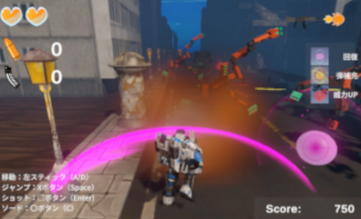
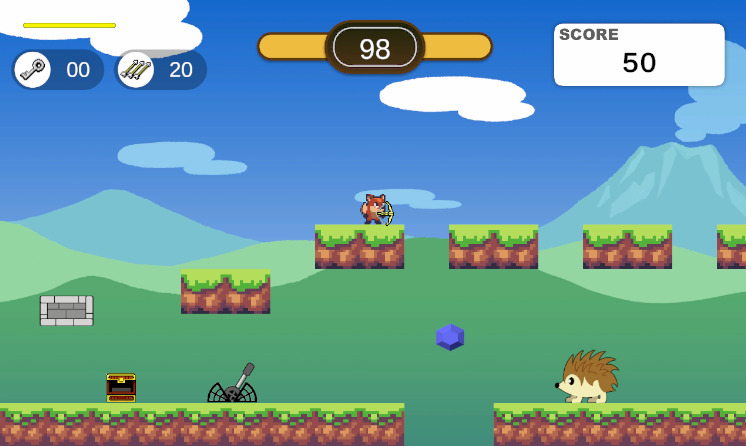
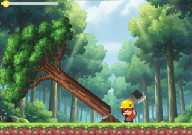

ポートフォリオ
RunAndGunSurvivor

迫りくる敵を撃破しながら進む、3Dサバイバルランアクションです。
限られた弾薬をやりくりする射撃と、強力な近接攻撃の使い分けが攻略の鍵を握ります。
本作は書籍で3D開発の基礎を学びつつ、ゲーム性は一から独自に設計しました。
状況に応じて変化するアイテム生成や、直感的なUI演出など、プレイの手触りにこだわった実装を行い、学習した技術を応用して一つの作品として完結させました。
JewelryHunterWorld

UnityのUniversal2Dプロジェクトとして作った横スクロールのアクションゲームです。
ワールドマップを探索し、各ステージのギミックを攻略して進んでいきます。全ステージをクリアするとボスと戦うことができます。
技術面では、JSONを用いた独自のオートセーブ機能や、負荷を抑えたアイテム補充ロジックを実装。基礎を網羅しつつ、機能拡張を通じてシステム構築の土台を築いた作品です。
木こりの与作

木を左右から交互に伐採し、得た報酬で能力を強化する拡大再生産アクションです。
オープニングから目標達成後のエンディングまで、一連のゲームサイクルを一つの作品として完結させています。
技術面では外部テンプレートに頼らず、すべてのロジックを自作しました。
木が倒れる際の加速度計算や、SpriteMaskの動的制御、カメラシェイクを用いた打撃演出など、学んだ基礎を応用して「手触りの良さ」をゼロから作成しています。